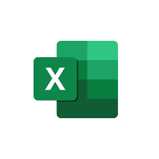

Performance Marketing et ROI des Campagnes

Projet scolaire : ITBS
Projet : Optimisation de la Performance Marketing et du ROI des Campagnes.
Problématique
Comment la Business Intelligence (BI) peut-elle aider les entreprises à analyser leurs campagnes marketing, optimiser leurs budgets et maximiser le retour sur investissement (ROI) ? Notre solution repose sur un système BI exploitant efficacement les données marketing.
Analyse de l’Existant
- Données dispersées sur plusieurs plateformes (TV, réseaux sociaux, radio, influenceurs).
- Difficulté à mesurer la performance des canaux marketing.
- Manque d’outils pour analyser et optimiser le ROI.
Solution Proposée
Nous avons développé une solution BI basée sur deux Data Marts :
- Data Mart 1 : Suivi des performances des canaux promotionnels.
- Data Mart 2 : Analyse des comportements clients et rentabilité.
Méthodologie GIMSI
- 📌 Analyse des besoins (définition des KPIs).
- 📌 Modélisation (architecture en étoile).
- 📌 Développement ETL.
- 📌 Validation des résultats et amélioration continue.
Interprétation
- 🔹 Renforcer le budget radio pour un meilleur ROI.
- 🔹 Réévaluer le budget TV, car le ROI est faible malgré un investissement élevé.
- 🔹 Promouvoir les produits moins populaires via des campagnes ciblées.
- 🔹 Développer des offres pour booster les ventes en magasins physiques.
Outils Utilisés
SSIS

SSMS


Excel
Conclusion
Grâce à cette solution BI, les entreprises peuvent mieux comprendre l'impact de leurs campagnes marketing et optimiser leurs budgets pour un ROI plus élevé.